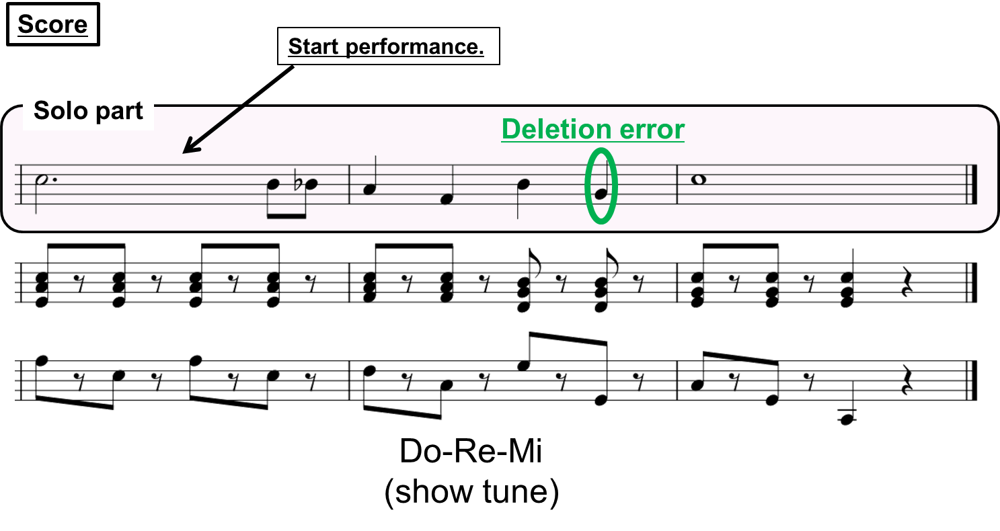
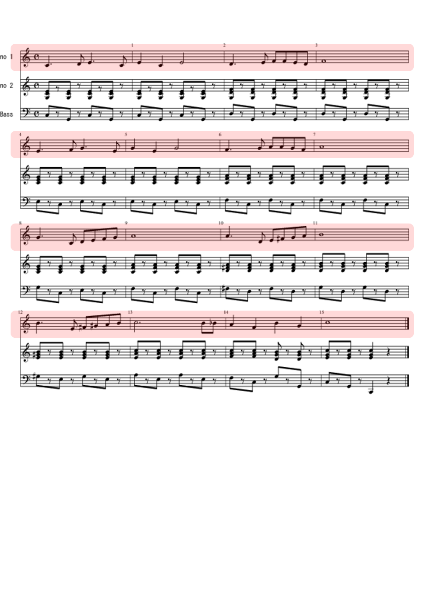

Acoustic Automatic Accompaniment System for Musical Performance with Errors and Arbitrary Repeats and Skips
Tomohiko Nakamura, Eita Nakamura, and Shigeki Sagayama (The University of Tokyo)
We propose a system that can synchronize musical accompaniment automatically to a human performance with insertion/deletion/substitution errors and arbitrary repeats/skips in real time [1].
Accompanying to Human Performance during Practice
Accompanying to Human Performance with a deletion error

Accompanying to Human Performance during practice
A Repeat and tempo changes
Some Repeats
Many Errors and Repeats in short time (00:39 to end)
Whole score: Do-Re-Mi
The parts highlighted in pink are played by the human, and the others are played by the proposed system.

Reference
[1] Tomohiko Nakamura, Eita Nakamura, and Shigeki Sagayama, "Real-Time Audio-to-Score Alignment of Music Performances Containing Errors and Arbitrary Repeats and Skips,"IEEE/ACM Transactions on Audio, Speech and Language Processing (IEEE/ACM TASLP), vol. 24, issue 2, pp. 329--339, Feb. 2016.